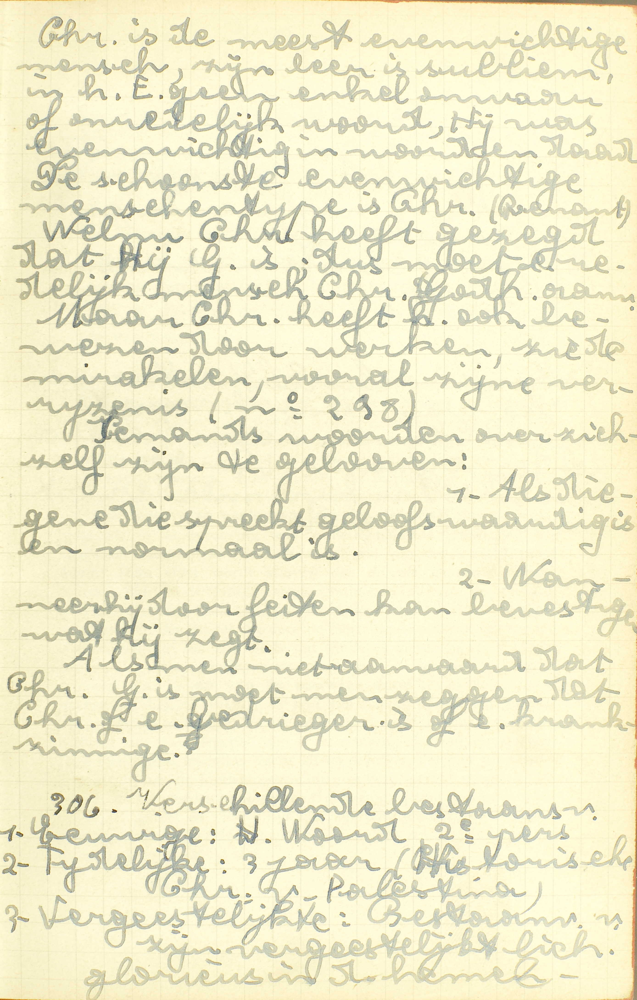
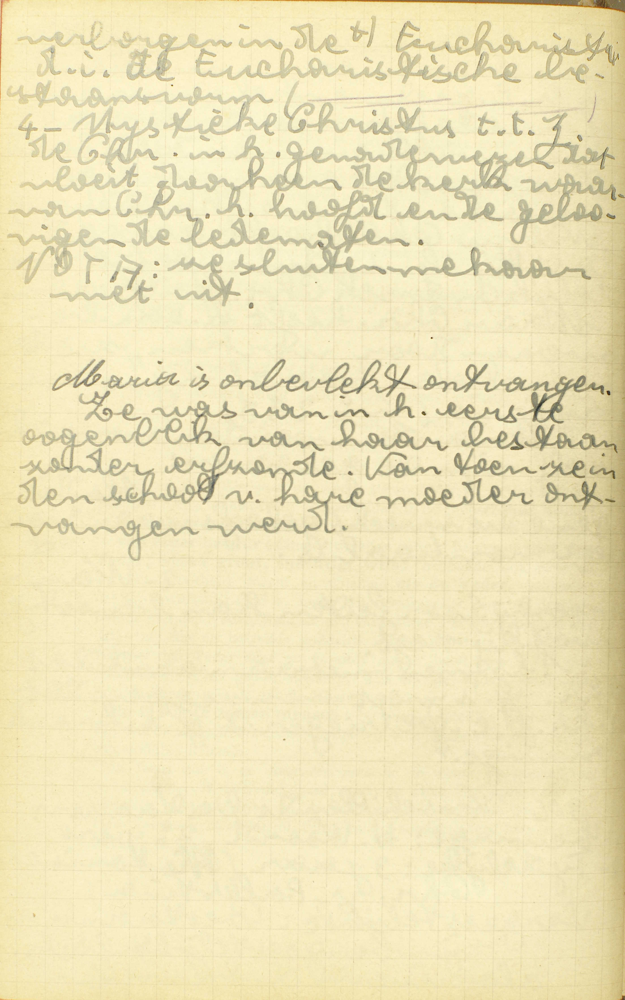

BEKNOPTE VERKLARING
van de
MECHELSE CATECHISMUS
ten gebruike van het middelbaar onderwijs
EERSTE DEEL
–
ZEVENDE LES
Van de Menswording van Christus
| En in Jezus Christus, zijn enige Zoon | Wie Jezus is | Welke is de tweede Persoon van de Heilige Drievuldigheid? | ||||
| Wat Jezus is | Is Jezus God of mens? | |||||
| Onze Heer | Reden van deze naam | Waarom wordt de Zoon meer onze Heer genoemd dan God de Vader? | ||||
| Die ontvangen is van de H. Geest, geboren uit de Maagd Maria | Menswording | Reden | Waarom is de Zoon Gods mens geworden? | |||
| Wijze | Hoe is de Zoon Gods mens geworden? | |||||
| Geboorte | Is de geboorte van de Zoon Gods in alles de geboorte van andere mensen gelijk geweest? | |||||
| Vaderschap van de H. Jozef | Is Jozef de vader van Christus geweest? | |||||
Welke is de tweede Persoon van de Heilige Drievuldigheid?
God de Zoon, die, mens geworden zijnde, Jezus Christus genoemd is
 Christus is de meest evenwichtige mens, zijn leer is subliem, in het Evangelie geen enkel onwaar of onredelijk woord, Hij was evenwichtig in woord en daad. Het schoonste, evenwichtigste menstype is Christus. Welnu, Christus heeft gezegd dat Hij God is, dus moet een redelijke mens Christus’ godheid aannemen.  Maria is onbevlekt ontvangen. Ze was van in haar eerste ogenblik van haar bestaan zonder erfzonde. Van toen ze in de schoot van haar moeder ontvangen werd. A. De tweede Persoon van de H. Drievuldigheid is God de Zoon, en Hij is de tweede en niet de eerste of de derde, omdat Hij, in de orde van de voortkomst, na de Vader en vóór de H. Geest staat (zie 6ᵉ v. 5ᵉ les); die, mens geworden zijnde: de menselijke natuur aangenomen hebbende en als dusdanig beschouwd, Jezus Christus genoemd is.
De tweede Persoon van de H. Drievuldigheid heet dus God de Zoon en Jezus Christus: God de Zoon, als wij Hem alleen als God, en Jezus Christus als wij Hem als God en mens beschouwen. Bijgevolg moet men op de vraag: wie is Jezus Christus? antwoorden: Jezus Christus is God de Zoon, de tweede Persoon van de H. Drievuldigheid, voor ons mens geworden. Hij is dus een goddelijke Persoon, te weten, de tweede Persoon van de H. Drievuldigheid: maar, op geener wijze een menselijke persoon.
De naam Jezus, van Hebreeuwsen oorsprong, betekent redder, verlosser, zaligmaker; derhalve past hij volmaakt op God de Zoon voor ons mens geworden, die ons, als mens, van de slavernij van de duivel en van de eeuwige dood gered, verlost, en voor ons de weg van de zaligheid geopend heeft. Het grieksche woord Christus, alsook het Hebreeuwse Messias betekenen beide gezalfde. Gezalfden noemde men in de Oude Wet de koningen, de priesters en de profeten, en die naam komt hij uitmuntendheid aan Christus toe, omdat Hij onze bijzonderste koning, hoogepriester en leeraar is.
Is Jezus God of mens?
Hij is waarachtig God, van één natuur met de Vader: even groot, machtig, wijs als de Vader; en is ook tegelijk mens
V. Heeft Jezus Christus, de tweede Persoon van de H. Drievuldigheid, voor ons mens geworden, de goddelijke of de menselijke natuur?
A. Hij is waarachtig God: heeft wezenlijk de goddelijke natuur, — van één natuur: één en dezelfde natuur hebbende met de Vader; even groot, machtig, wijs: hebbende ook één en dezelfde grootheid, macht en wijsheid als de Vader. Aangezien dat Jezus wezenlijk God is, heeft Hij noodzakelijk één en dezelfde natuur met de Vader, want de drie goddelijke Personen hebben alle drie maar één en hetzelfde goddelijk wezen of natuur, en aangezien Hij met de Vader één en dezelfde natuur heeft, zo is Hij ook noodzakelijk even groot, machtig, wijs als de Vader, daar die hoedanigheden van de natuur afhangen.
En is ook samen mens: bij zijn goddelijke natuur heeft Hij ook de menselijke, dus, gelijk wij allen, een redelijke ziel en een stoffelijk lichaam.
In Jezus dus is er maar één persoon, te weten, een goddelijke, de tweede van de H. Drievuldigheid; maar in Hem zijn twee naturen, namelijk, de goddelijke en de menselijke, en beide bestaan in Hem zonder verwarring of vermenging, zodat iedere haar eigen werking behoudt.
Jezus heeft de goddelijke natuur van in van de eeuwigheid; maar de menselijke, slechts sedert zijn Menswording, die plaats greep over bijna negentien eeuwen.
Hoe God de Zoon de menselijke natuur heeft kunnen aannemen, is voor ons een waar mysterie. (Zie 5ᵉ les, 3ᵉ v. en 2ᵉ l., 6ᵉ v.)
Waarom is de Zoon Gods mens geworden?
Om de mensen met zijn voorbeeld en zijn leer de weg tot de hemel te tonen, en dezelve van de slavernij van de duivel en van de eeuwige dood te verlossen
A. Om twee redenen is de Zoon Gods voor ons mens geworden:
1° Om de mensen de weg tot de hemel te tonen: om hun te openbaren, wat zij moeten geloven, hopen en doen om de eeuwige zaligheid te bekomen; — met zijn voorbeeld en zijn leer: om ons op een volmaakte wijze de weg tot de hemel te tonen, moet immers de leer van voorbeelden vergezeld gaan: woorden wekken, maar voorbeelden trekken.
2° Om hen te verlossen van de slavernij van de duivel, bestaande in de beroving van de heiligmakende gratie, die alle mensen aangeboren wordt door de val van de eersten vader Adam. Deze staat wordt slavernij van de duivel genoemd, omdat degenen, die van de heiligmakende gratie beroofd zijn, de waardigheid van kinderen Gods en erfgenamen van de hemel verloren hebben, en aldus door de duivel, die door de bekoring de oorzaak van de zonde is geworden, uit het rijk Gods, dat uit dezes aangenomene kinderen bestaat, als ’t ware gerukt en tot gevangenen, onderdanen en slaven gemaakt zijn; — en van de eeuwige dood: van de eeuwige straffen van de hel, te weten: de pijn van schade of het derven van het goddelijk aanschijn, en de pijn van gevoel of van vuur, die bestemd zijn voor degenen die in de slavernij van de duivel sterven. Deze laatste pijn nochtans wacht alleen dezulken die met een dadelijke doodzonde op hun conscientie van deze wereld scheiden. De pijnen van de hel worden eeuwige dood genoemd, omdat de verdoemden in de hel geheel en voor altijd van het bovennatuurlijk en allergelukkigste leven van de Heiligen beroofd, en zo ten opzichte van dat leven voor eeuwig dood zijn.
Indien God voor de zonde een volkomene voldoening eiste, dan was de menswording van een goddelijken Persoon volstrekt nodig om ons van de slavernij van de duivel te verlossen; hoe verhevener immers de beledigde persoon, hoe groter ook de oneer die hem aangedaan wordt; daar nu God oneindig boven alle schepselen verheven is, zo is, uit die hoofde, de zonde waardoor wij Hem onteeren, een oneindig kwaad. Maar voor een oneindige oneer kan slechts door een uitboeting van oneindige waarde voldaan worden, en, daar de waarde van de eer nooit de persoon overtreft die vereert, zo kan noch engel noch mens, beider waardigheid beperkt zijnde, God een genoegzame eer tot uitboeting van de zonde aanbieden, en was er hiertoe maar één middel, te weten, dat een goddelijke Persoon een geschapene natuur aannam om daarin de zonde uit te boeten.
Hoe is de Zoon Gods mens geworden?
Door bijzondere werking van de Heilige Geest, aannemende de menselijke natuur in het zuiver lichaam van Maria
A. Door bijzondere werking: door een mirakel van de Heilige Geest; dit mirakel echter was nief uitsluitelijk de H. Geest eigen, maar, gelijk al de werken die op de schepselen betrek hebben, de drie goddelijke Personen gemeen; doch omdat het hier een werk vau liefde geldt, wordt het de H. Geest bijzonder toegeschreven; — aannemende de menselijke natuur in het zuiver lichaam van Maria: Maria is dan de ware moeder van Jezus Christus, niet voor zoveel Hij God, maar alleen voor zoveel Hij mens is, bijgevolg is zij ook de Moeder Gods, daar zij wezenlijk de Moeder is van een goddelijken Persoon.
Is de geboorte van de Zoon Gods in alles de geboorte van andere mensen gelijk geweest?
Neen; want Hij is geboren van zijn moeder zonder pijn, smart of verlies van haar maagdelijke zuiverheid, haar latende een zuivere Maagd, gelijk zij was
A. Ook het verschil tussen de geboorte van Jezus en die van andere mensen komt voort uit een bijzondere werking van de H. Geest. Om nu wel te verstaan, wat hier en in de voorgaande vraag door die werking hetekend wordt, dient men een nauwkeurig onderscheid te maken tussen de Menswording van de Zoon Gods in zich zelve, en de bijzondere werking waardoor zij teweeggebracht werd: God de Zoon, en niet de Vader of de H. Geest, is mens geworden, maar deze Menswording geschiedde door de werking van de drie goddelijke Personen.
Is Jozef de vader van Christus geweest?
Hij is de natuurlijke vader niet geweest, maar alleen zijn voedstervader of bewaarder
A. Hij is de natuurlijke vader van Christus niet geweest, gelijk Maria zijn natuurlijke moeder, maar alleen zijn — voedstervader of bewaarder: zo heet men iemand die voor een kind dat het zijn niet is, zorg draagt alsof het zijn eigen kind ware.
Waarom wordt de Zoon meer onze Heer genoemd dan God de Vader?
Omdat Hij ons en alle mensen niet alleen gelijk de Vader geschapen, maar ook met zijn dierbaar bloed gekocht en verlost heeft, als wij verloren waren
V. Waarom wordt in het Symbolum, de naam onze Heer aan God de Zoon gegeven, terwijl Hij daar aan God de Vader niet toegekend wordt?
A. Omdat Hij ons en alle mensen niet alleen gelijk de Vader geschapen heeft: om reden van de schepping komt de naam onze Heer zowel de Vader als de Zoon toe; — maar ook met zijn dierbaar bloed gekocht en verlost heeft, als wij verloren waren: omdat Jezus, als mens, met op het kruis tot uitboeting van de zonde zijn kostbaar bloed te vergieten, ons daarenboven van de slavernij van de duivel vrijgekocht en verlost heeft, als wij er door de zonde in gevallen waren: hierom wordt Jezus op een bijzondere wijze onze Heer genoemd; deze reden immers bestaat noch voor de Vader, noch voor de H. Geest, daar Zij de menselijke natuur niet aangenomen hebben.
VRAGEN
Welke woorden van het Symbolum worden hier uitgelegd? — Welke zijn de hoofdpunten van deze les? — Wat onderzoekt de Catechismus nopens ieder van die punten?
Hoe noemt men volgens de Catechismus de tweeden Persoon van de H. Drievuldigheid? — Welk verschil van betekenis bestaat er tussen deze twee namen? — Wie is dan Jezus Christus? — Welke persoon is Hijf — Wat betekent Jezus; en wat Christus? — En waarom worden deze namen aan God de Zoon, voor ons mens geworden, gegeven? — Hoe is God de Zoon de tweede Persoon van de H. Drievuldigheid, en niet de eerste of de derde?
Geef de zin van de vraag: Is Jezus God of mens? — Leg, met de woorden van de Catechismus, welke naturen er in Jezus zijn. — Leg die woorden uit. — Zeg of zijn goddelijke natuur verschillend is van die van de Vader; en geef de reden daarvan. — Is Hij als God minder oud, minder machtig, minder wijs, dan de Vader? — Bewijs uw antwoord. — Wat heeft Hij als mens? — Hoeveel en welke personen en naturen zijn er dan in Jezus? — Hoe bestaan die twee naturen samen in één Persoon? — Sedert hoelang heeft Jezus die twee naturen? — Kunnen wij de Menswording van God de Zoon verstaan?
Om hoeveel redenen is de Zoon Gods mens geworden? — Stel die redenen met de woorden van de Catechismus voor. — Leg de woorden uit: de weg tot de hemel te tonen. — Waarom heeft de Zoon Gods ons de weg tot de hemel getoond niet alleen met zijn leer, maar ook met zijn voorbeelden? — Wat is de slavernij van de duivel en van waar komt die naam? — Wat is de eeuwige dood? — Leg die naam uit. — Was de Menswording volstrekt nodig om ons van de slavernij van de duivel te verlossen? — Geef de reden daarvan.
Leg de woorden uit: door een bijzondere werking van de H. Geest. — Wat is Maria ten opzichte van Jezus Christus? — Is zij wezenlijk de Moeder Gods, en waarom?
Van waar komt het verschil voort, dat bestaat tussen de geboorte van Christus en de geboorte van de andere mensen? — Indien de bijzondere werking Gods in de Menswording van God de Zoon aan de drie goddelijke Personen gemeen is, zijn dus niet de drie goddelijke Personen mens geworden?
Hoe is Jozef de vader van Jesus niet geweest, en hoe is hij het geweest? — Wat betekent voedstervader of bewaarder?
Welk is de zin van de vraag: Waarom wordt de Zoon meer onze Heer genoemd dan God de Vader? — Om welke reden mag de Vader zowel als de Zoon onze Heer genoemd worden? — Hoe geldt deze reden voor de drie goddelijke Personen? — Zeg, met de woorden van de Catechismus, om welke reden God de Zoon op een bijzondere wijze onze Heer genoemd wordt, en leg die woorden uit, — Bestaat deze reden niet voor de Vader en de H. Geest, en waarom niet?